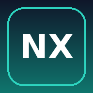

NoxRift
Wird geöffnet …
Kein Knopf zu sehen? Oben rechts auf ⋮ tippen → „Zum Startbildschirm hinzufügen“ → „Installieren“. Wichtig: auf DIESER Seite, nicht in NoxRift selbst.
NoxRift öffnen🔒 Hier liegen keine Daten. Deine Zahlen bleiben hinter deiner Claude-Anmeldung.